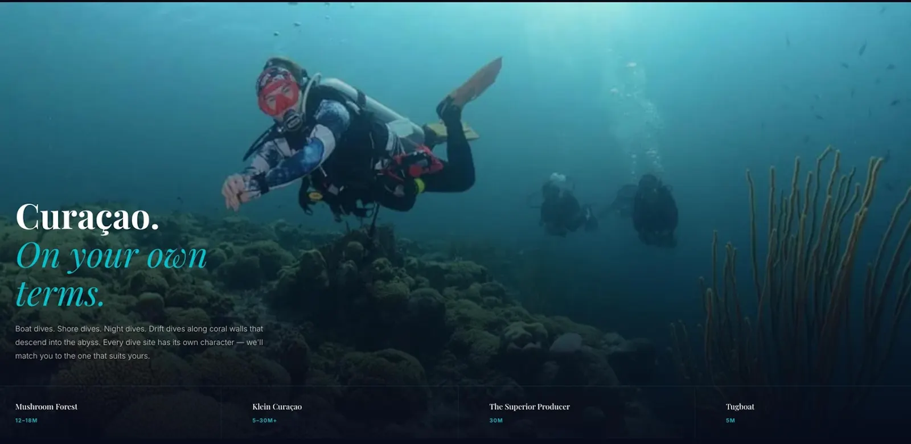

Wereldklasse rif voor de deur. Geen website die er ook maar in de buurt van komt.
De eigenaar begeleidde hier al jaren duiken. Vaste gasten kwamen elk seizoen terug, stuurden doorverwijzingen en schreven e-mails die aanvoelden als ansichtkaarten. Maar eerste bezoekers die online zochten, vonden een website die al jaren niet meer aangeraakt leek.
Het contrast was groot: een van de mooiste duiklocaties in het zuidelijke Caribisch gebied, vertegenwoordigd door een template met stockfoto's en een boekingsformulier dat nergens naartoe leidde.
We bouwden de site rondom sfeer als uitgangspunt. Het water heeft hier een specifieke kleur — van teal naar diepblauw — en de site moest dat dragen. Full-width beelden, minimale tekst, niets dat afleidt van het visuele.
Boeken werd teruggebracht tot één WhatsApp-link. Geen formulieren, geen chatbot, geen drempel. De copy werd herschreven in de toon waarop de eigenaar daadwerkelijk met gasten spreekt — direct, warm, persoonlijk. Geen bureautaal.
Binnen de eerste twee weken stuurde de eigenaar de sitelink mee in reacties op aanvraag-e-mails — iets wat ze eerder vermeed omdat de oude site er "niet professioneel uitzag." Dat kleine verschil zei alles.
Snel, helder en werkend. Precies wat het moest zijn.